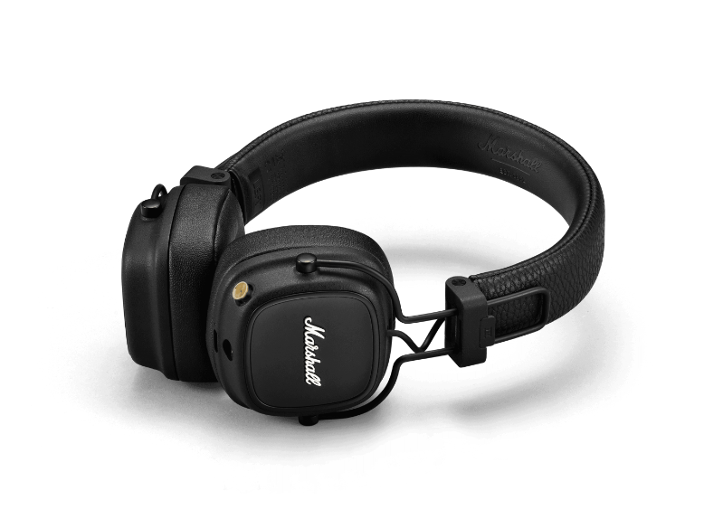
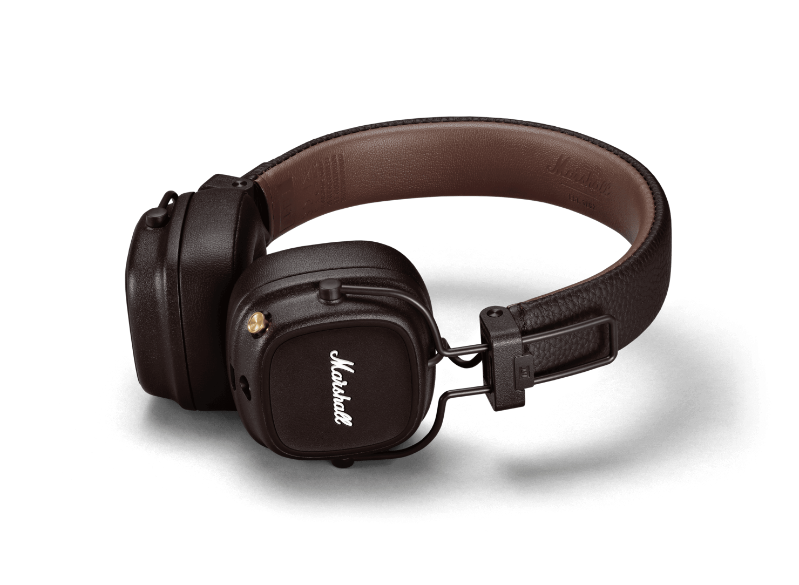
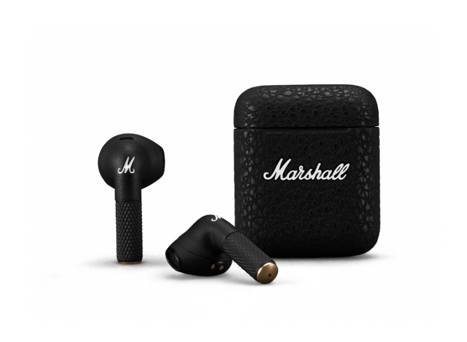
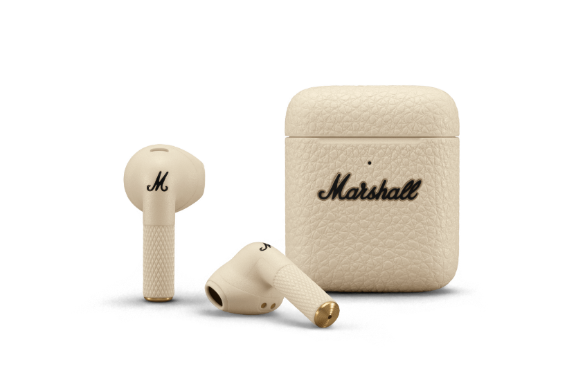
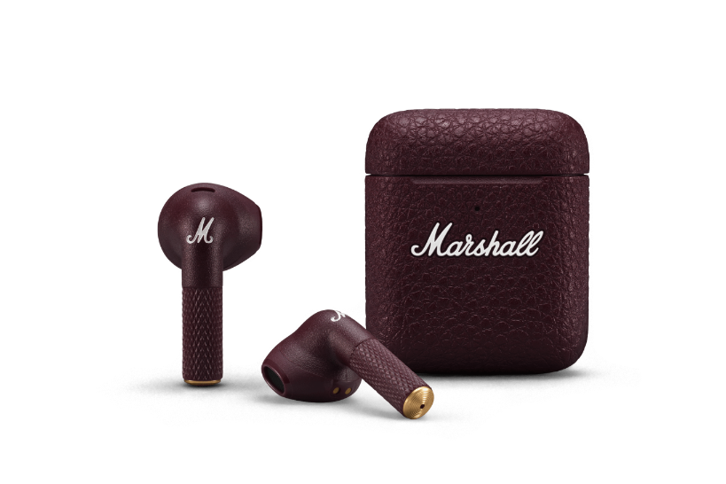
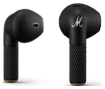
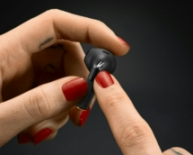

Marshall Major IV


SOUND
I want to note right away that in the fourth generation of headphones, the manufacturer decided to significantly change their sound signature. Now it has become softer and calmer, smoother and more detailed (despite the simplified wireless codec).
AUTONOMY
Major IV delivers 80+ solid hours of wireless playtime with quick-charge capability — only 15 minutes of charging will give you 15 hours of listening. These are headphones truly built for the long haul.
WIRELESS CHARGING
It's now easier than ever to charge and go. You can rest your headphones neatly on a charging pad, and matte silicone piping on the ear cap ensures it won't move around. Spend less time looking for your charger and more time listening to your music. Wireless charging pad is not included.
Marshall Minor III



PAIR AND PLAY
Minor III brings you unrivaled Marshall signature sound without any extra clutter. These headphones do all the heavy lifting for you, so all you have to do is pair with your device and play.
INTUITIVE TOUCH CONTROL
Minor III comes with mirrored touch-sensitive earbuds, so you can use either one to control your music and phone calls. Removing and inserting an earbud also initiates the auto-pause and play feature, so you won't miss a single beat.
AUTONOMY
Minor III packs 25 total hours of wireless playtime to keep you moving. The earbuds hold 5 hours, and the portable charging case carries four additional charges so you can slip the earbuds into the case for some extra power. You can easily charge the case wirelessly or with a USB-C cable.